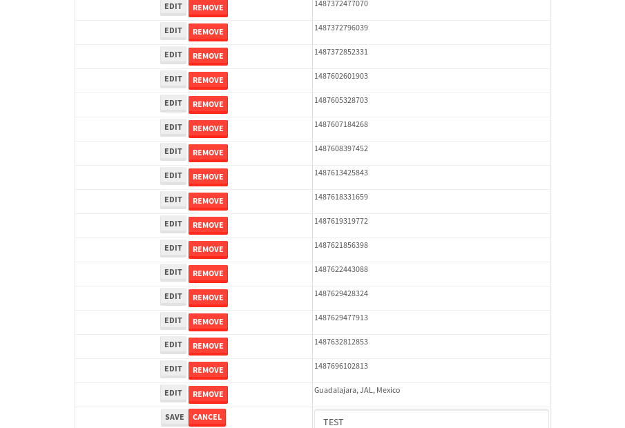

tbColumn.Grid Sorting - 27.68sTests: 5Skipped: 0Failures: 0 should sort data in ascending order then on descending order when sorting by Order Id column - 5.848sTests passed: 100.00%should order data in ascending order when click-sorting an unsorted text column - 5.169sTests passed: 100.00%should order data in descending order when click-sorting an ascending-sorted text column - 5.611sTests passed: 100.00%should order data in ascending order when click-sorting an unsorted date column - 5.614sTests passed: 100.00%should order data in descending order when click-sorting twice an unsorted date column - 5.434sTests passed: 100.00%
tbSingleForm.Form validations - 2.269sTests: 2Skipped: 0Failures: 0 should have an empty required field - 1.194sTests passed: 100.00%should not be able to click on save - 1.075sTests passed: 100.00%
Tubular Filters.tbColumnFilter - 110.214sTests: 12Skipped: 0Failures: 0 should cancel filtering when clicking outside filter-popover - 9.359sTests passed: 100.00%should disable Value text-input for "None" filter - 7.018sTests passed: 100.00%should disable apply button for "None" filter - 6.744sTests passed: 100.00%should decorate popover button when showing data is being filtered for its column - 12.706sTests passed: 100.00%should correctly filter data for the "Equals" filtering option - 8.626sTests passed: 100.00%should correctly filter data for the "Not Equals" filtering option - 8.822sTests passed: 100.00%should correctly filter data for the "Contains" filtering option - 8.939sTests passed: 100.00%should correctly filter data for the "Not Contains" filtering option - 8.601sTests passed: 100.00%should correctly filter data for the "Starts With" filtering option - 7.161sTests passed: 100.00%should correctly filter data for the "Not Starts With" filtering option - 6.954sTests passed: 100.00%should correctly filter data for the "Ends With" filtering option - 7.04sTests passed: 100.00%should correctly filter data for the "Not Ends With" filtering option - 7.013sTests passed: 100.00%
Tubular Filters.tbColumnDateTimeFilter - 138.484sTests: 12Skipped: 0Failures: 0 should cancel filtering when clicking outside filter-popover - 7.593sTests passed: 100.00%should disable Value text-input for "None" filter - 6.716sTests passed: 100.00%should disable apply button for "None" filter - 7.12sTests passed: 100.00%should clear filtering when clicking on Clean button - 17.64sTests passed: 100.00%should decorate popover button when showing data is being filtered for its column - 11.947sTests passed: 100.00%should correctly filter data for the "Equals" filtering option - 7.6sTests passed: 100.00%should correctly filter data for the "Not Equals" filtering option - 7.259sTests passed: 100.00%should correctly filter data for the "Between" filtering option - 12.405sTests passed: 100.00%should correctly filter data for the "Greater-or-equal" filtering option - 12.296sTests passed: 100.00%should corretlly filter data for the "Greater" filtering option - 12.577sTests passed: 100.00%should correctly filter data for the "Less-or-equal" filtering option - 12.051sTests passed: 100.00%should correctly filter data for the "Less" filtering option - 12.156sTests passed: 100.00%
Tubular Filters.tbColumnOptionsFilter - 82.405sTests: 3Skipped: 0Failures: 0 should cancel filtering when clicking outside filter-popover - 9.234sTests passed: 100.00%should decorate popover button when showing data is being filtered for its column - 11.891sTests passed: 100.00%should filter column-elements in accordance to the selected filter when selecting a single option - 50.021sTests passed: 100.00%
Tubular Filters.tbTextSearch - 50.532sTests: 5Skipped: 0Failures: 0 min-chars is not set - 1.171sTests passed: 100.00%should filter data in searchable-column customer name to matching inputted text, starting from 3 characters - 7.009sTests passed: 100.00%should filter data in searchable-column shipper city to matching inputted text, starting from 3 characters - 12.453sTests passed: 100.00%should show clear button when there is inputted text only - 7.83sTests passed: 100.00%should clear filtering when clicking clear button - 16.546sTests passed: 100.00%
tbForm related components.tbCheckboxField - 7.085sTests: 2Skipped: 0Failures: 0 should save changes on "SAVE" - 3.081sTests passed: 100.00%should discard changes on "CANCEL" - 2.543sTests passed: 100.00%
tbForm related components.tbDropDownEditor - 13.198sTests: 5Skipped: 0Failures: 0 should set initial input value to the value of "value" attribute when defined - 2.161sTests passed: 100.00%should show the component name value in a label field when "showLabel" attribute is true - 2.099sTests passed: 100.00%should show a help field equal to this attribute, is present - 2.185sTests passed: 100.00%should submit modifications to item/server when clicking form "Save" - 3.259sTests passed: 100.00%should NOT submit modifications to item/server when clicking form "Cancel" - 2.657sTests passed: 100.00%
tbForm related components.tbTextArea - 18.972sTests: 7Skipped: 0Failures: 0 should set initial input value to the value of "value" attribute when defined - 2.232sTests passed: 100.00%should be invalidated when the number of chars is not in the range of "min" and "max" attributes - 2.786sTests passed: 100.00%should show the component name value in a label field when "showLabel" attribute is true - 2.02sTests passed: 100.00%should show a help field equal to this attribute, is present - 1.859sTests passed: 100.00%should require the field when the attribute "required" is true - 2.043sTests passed: 100.00%should submit modifications to item/server when clicking form "Save" - 3.637sTests passed: 100.00%should NOT submit modifications to item/server when clicking form "Cancel" - 3.453sTests passed: 100.00%
tbForm related components.tbDateEditor - 15.989sTests: 6Skipped: 0Failures: 0 should set initial date value to the value of "value" attribute when defined - 1.934sTests passed: 100.00%should be invalidated when the date is not in the range of "min" and "max" attributes - 3.26sTests passed: 100.00%should show the component name value in a label field when "showLabel" attribute is true - 2.016sTests passed: 100.00%should show a help field equal to this attribute, is present - 1.929sTests passed: 100.00%should submit modifications to item/server when clicking form "Save" - 2.977sTests passed: 100.00%should NOT submit modifications to item/server when clicking form "Cancel" - 3.053sTests passed: 100.00%
tbForm related components.tbTypeaheadEditor - 20.467sTests: 7Skipped: 0Failures: 0 should show an options list when there is an API-info/component entered-data - 2.496sTests passed: 100.00%should select the option clicked - 2.254sTests passed: 100.00%should show a "delete" button when an option/match is selected, and delete the option if button is clicked - 3.344sTests passed: 100.00%should show a label value equal to the component name when "showLabel" attribue is true - 1.902sTests passed: 100.00%should require a value when "require" attribute is true - 2.427sTests passed: 100.00%should submit modifications to item/server when clicking form "Save" - 4.726sTests passed: 100.00%should NOT submit modifications to item/server when clicking form "Cancel" - 2.682sTests passed: 100.00%
tbForm related components.tbSimpleEditor - 22.301sTests: 9Skipped: 0Failures: 0 should set initial input value to the value of "value" attribute when defined - 2.024sTests passed: 100.00%should be invalidated when the number of chars is not in the range of "min" and "max" attributes - 3.063sTests passed: 100.00%should show the component name value in a label field when "showLabel" attribute is true - 2.026sTests passed: 100.00%should set input placeholder to the value of "placeholder" attribute - 2.127sTests passed: 100.00%should validate the control using the "regex" attribute, if present - 2.288sTests passed: 100.00%should show a help field equal to this attribute, is present - 1.895sTests passed: 100.00%should require the field when the attribute "required" is true - 2.337sTests passed: 100.00%should submit modifications to item/server when clicking form "Save" - 2.957sTests passed: 100.00%should NOT submit modifications to item/server when clicking form "Cancel" - 2.809sTests passed: 100.00%
tbForm related components.tbNumericEditor - 18.489sTests: 7Skipped: 0Failures: 0 should set initial component value to the value of "value" attribute when defined - 1.753sTests passed: 100.00%should be invalidated when the entered number is not in the range of "min" and "max" attributes - 2.417sTests passed: 100.00%should show the component name value in a label field when "showLabel" attribute is true - 2.161sTests passed: 100.00%should show a help field equal to this attribute, is present - 2.441sTests passed: 100.00%should require the field when the attribute "required" is true - 2.119sTests passed: 100.00%should submit modifications to item/server when clicking form "Save" - 3.616sTests passed: 100.00%should NOT submit modifications to item/server when clicking form "Cancel" - 3.279sTests passed: 100.00%
tbForm Connection Error NoModelKey - 2.505sTests: 1Skipped: 0Failures: 0 tbForm connection error functionality - 0.507sTests passed: 100.00%
tbForm Connection Error NoServerUrl - 2.418sTests: 1Skipped: 0Failures: 0 tbForm connection error functionality - 0.497sTests passed: 100.00%
tbGridComponents - 35.246sTests: 6Skipped: 0Failures: 4 should add item with newRow method - 5.247sExpected 'EDIT REMOVE TEST' not to be 'EDIT REMOVE TEST'.✗Tests passed: 50.00%should add item with newRow method and cancel action - 1.019sTests passed: 100.00%should update item with tbSaveButton - 2.871sExpected '' to be 'TEST'.✗Tests passed: 0.00%should NOT update item on cancel Update action - 1.462sFailed: ElementNotVisibleError✗Tests passed: 0.00%should remove item with tbRemoveButton - 21.846sExpected 69 not to be 69, 'should remove the row from the table'.✗Tests passed: 50.00%should NOT remove item on cancel Remove action - 1.287sTests passed: 100.00%
tbGridPager.navigation buttons - 10.816sTests: 1Skipped: 0Failures: 0 should perform no action when clicking on the numbered navigation button corresponding to the current-showing results page - 1.659sTests passed: 100.00%
tbGridPager.navigation buttons.first/non-last results page related functionallity - 4.713sTests: 2Skipped: 0Failures: 0 should disable "first" and "previous" navigation buttons when in first results page - 2.234sTests passed: 100.00%should enable "last" and "next" navigation buttons when in a results page other than last - 2.478sTests passed: 100.00%
tbGridPager.navigation buttons.last/non-first results page related functionallity - 4.444sTests: 2Skipped: 0Failures: 0 should disable "last" and "next" navigation buttons when in last results page - 2.192sTests passed: 100.00%should enable "first" and "previous" navigation buttons when in a results page other than first - 2.252sTests passed: 100.00%
tbGridPager.page navigation - 8.659sTests: 5Skipped: 0Failures: 0 should go to next results page when clicking on next navigation button - 1.997sTests passed: 100.00%should go to previous results page when clicking on previous navigation button - 2.321sTests passed: 100.00%should go to last results page when clicking on last navigation button - 1.443sTests passed: 100.00%should go to first results page when clicking on first navigation button - 1.423sTests passed: 100.00%should go to corresponding results page when clicking on a numbered navigation button - 1.475sTests passed: 100.00%
tbGridPagerInfo - 5.288sTests: 2Skipped: 0Failures: 0 should show text in accordance to numbered of filter rows and current results-page - 2.109sTests passed: 100.00%should show count in footer - 0.732sTests passed: 100.00%
tbHttp - 18.857sTests: 8Skipped: 1Failures: 0 should be authenticated - 3.319sTests passed: 100.00%retrieve data - 2.462sTests passed: 100.00%should not login bad credentials - 2.491sTests passed: 100.00%should have a refresh token - 2.639sTests passed: 100.00%should remove authentication - 2.547sTests passed: 100.00%get method-Is not authenticated - 2.429sTests passed: 100.00%post method-Is not authenticated - 2.968sTests passed: 100.00%should regenerate access token on post - 0s***Skipped***Tests passed: 0%
tbPageSizeSelctor - 9.689sTests: 4Skipped: 0Failures: 0 should filter up to 10 data rows per page when selecting a page size of "10" - 2.183sTests passed: 100.00%should filter up to 20 data rows per page when selecting a page size of "20" - 1.57sTests passed: 100.00%should filter up to 50 data rows per page when selecting a page size of "50" - 2.421sTests passed: 100.00%should filter up to 100 data rows per page when selecting a page size of "100" - 1.98sTests passed: 100.00%
tbRowSelectable - 9.851sTests: 2Skipped: 0Failures: 0 selected rows - 5.195sTests passed: 100.00%unselected rows - 3.093sTests passed: 100.00%
tbSingleForm - 20.1sTests: 8Skipped: 1Failures: 0 should load correct info - 0s***Skipped***Tests passed: 0%should change customer name - 2.637sTests passed: 100.00%should save it - 3.118sTests passed: 100.00%should clear the inputs - 2.945sTests passed: 100.00%should update - 2.891sTests passed: 100.00%should reset editor - 2.583sTests passed: 100.00%should not save if not Changes - 3.51sTests passed: 100.00%should not be able to click on save - 2.415sTests passed: 100.00%


{kind=link}